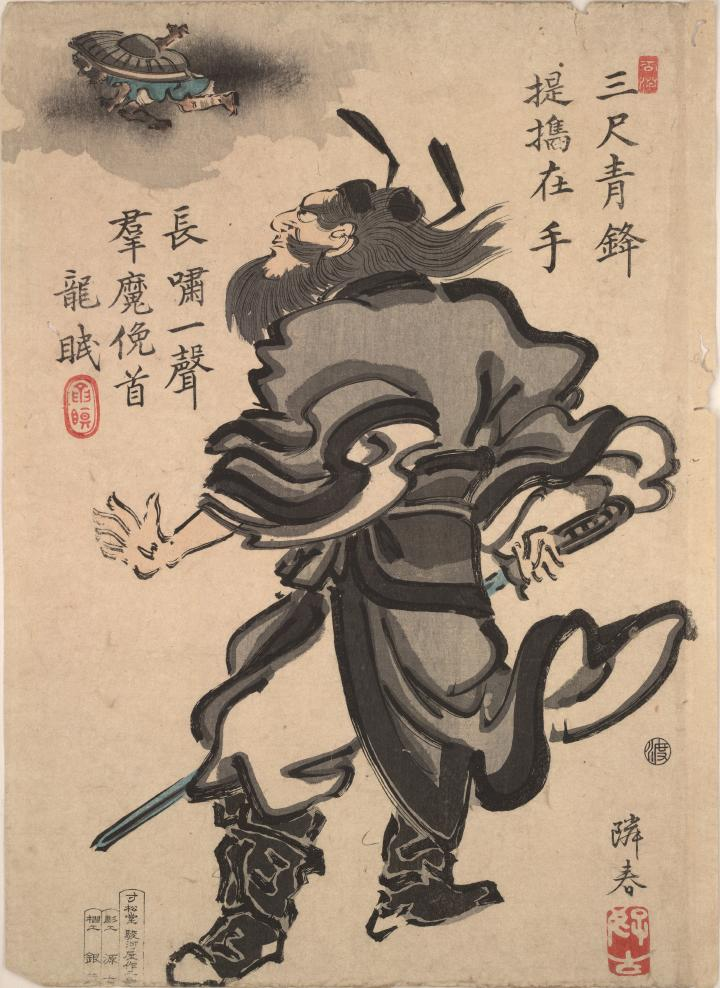

鐘馗；ショウキ，疫神；エキシン

鐘馗に追われる化物。笠をかぶり背を向けて逃げている。
著作者：福島隣春／出典：親書誌：U426_nichibunken_0013：鐘馗；ショウキ／日付：2006／資源識別子：U426_nichibunken_0013_0001_0000
Copyright (c)2010- International Research Center for Japanese Studies, Kyoto, Japan. All rights reserved.